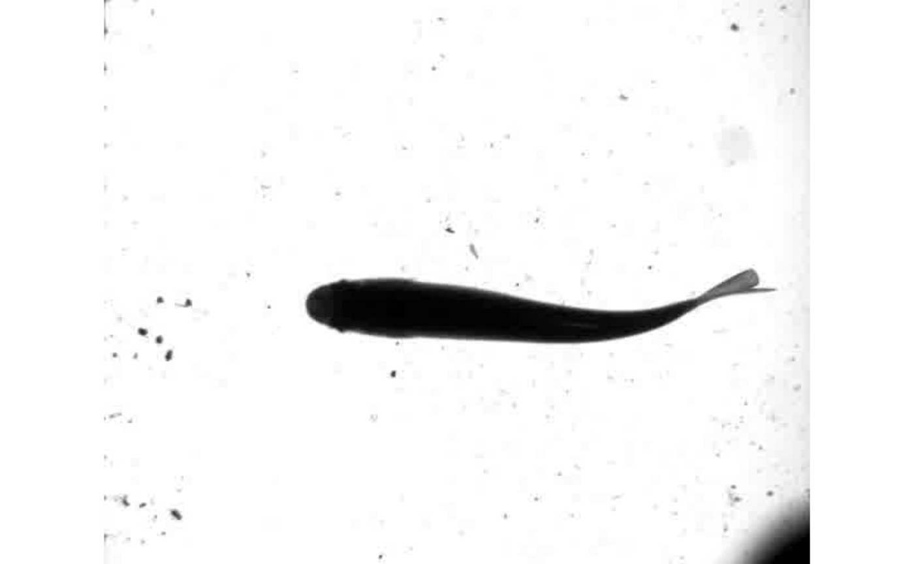
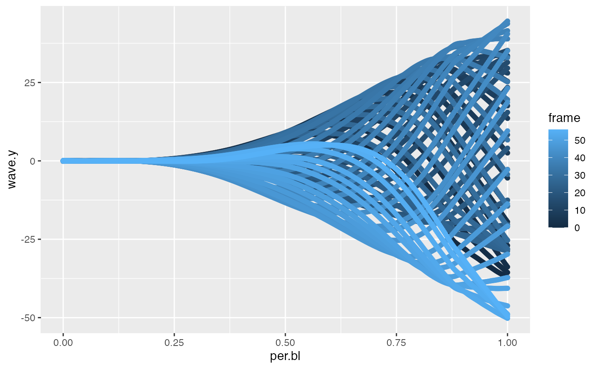
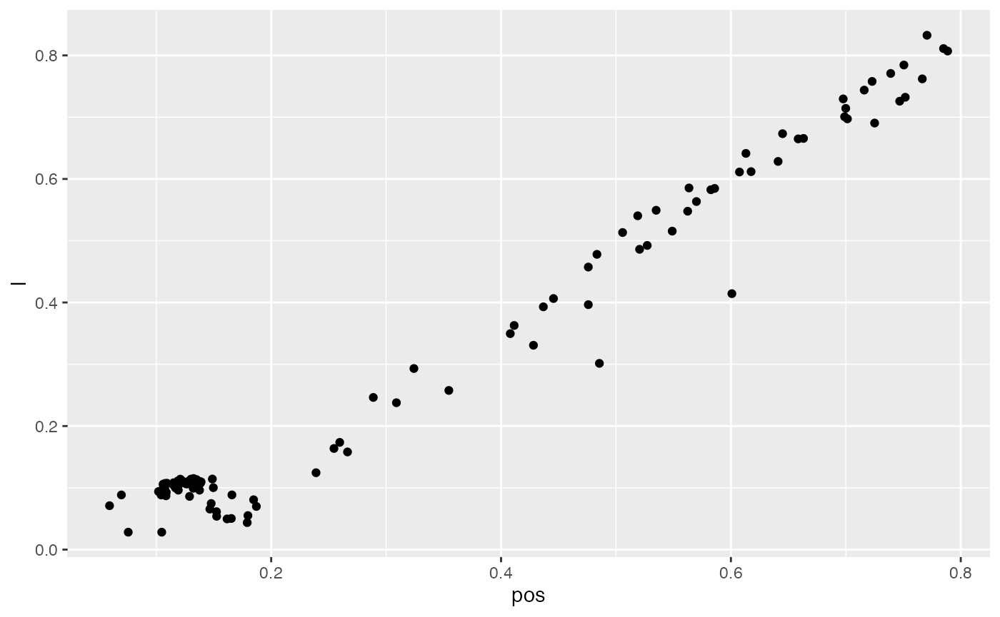
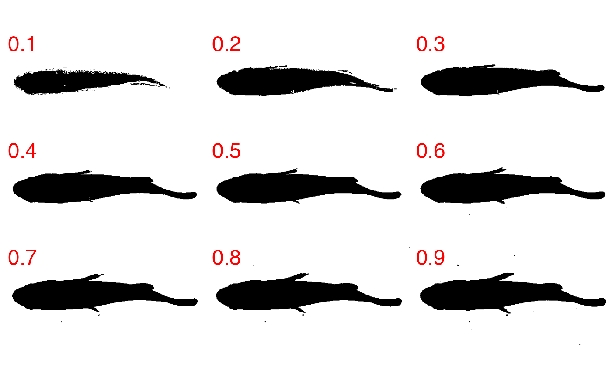
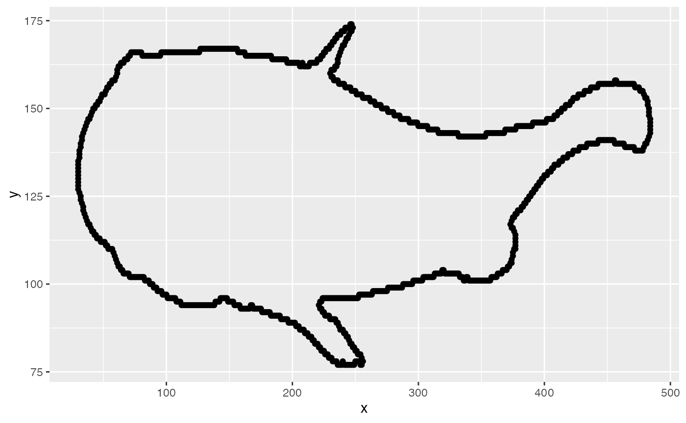
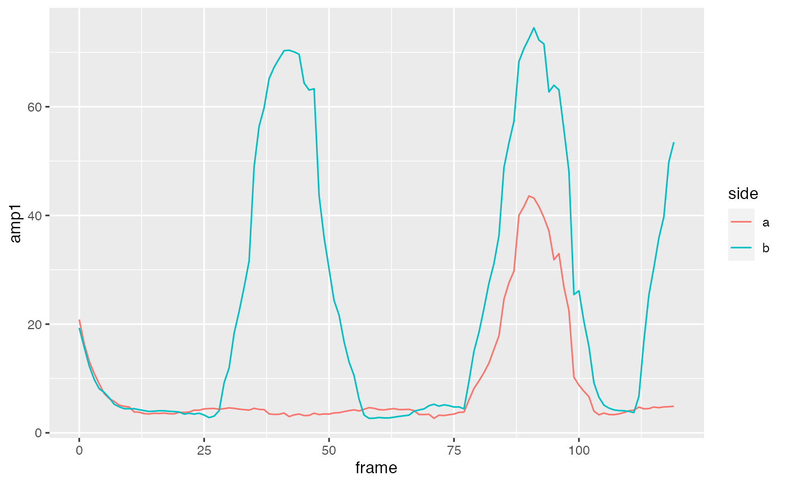
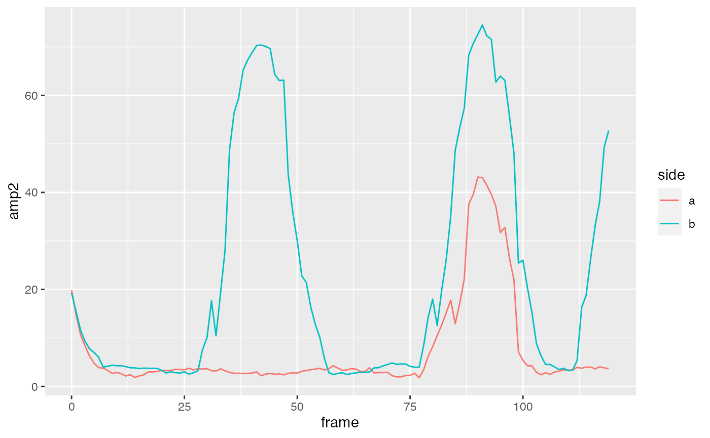
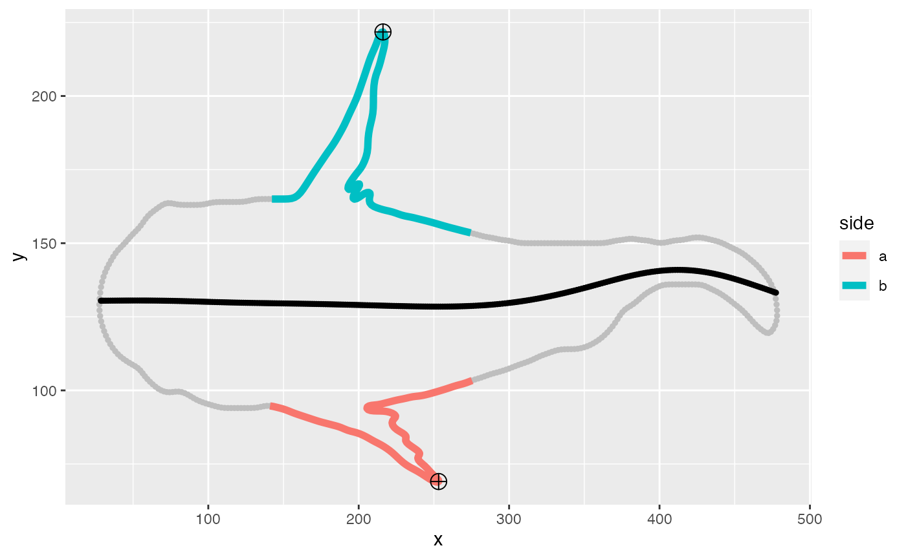

kinematic_analysis.RmdIf the starting point of analysis is a video file, trackter’s video.to.images(), a wrapper for the av package’s av_encode_video() function, can be used to extract images to a user-defined directory. For example, the following will extract images from an 56-frame video shot at 100 fps of a swimming rainbow trout included with the package.
library(trackter)
trout.vid <- system.file("extdata/vid", "trout.avi", package = "trackter")
dir.create("./trout_images")
vid.to.images(vid.path = trout.vid, out.dir = "./trout_images")Here, the first image stored in the output directory is displayed to see what we’re dealing with.
EBImage::display(EBImage::readImage(list.files("./trout_images",full.names = TRUE)[1]),method = "raster")
After image extraction, position and shape data can be retrieved using one of the kin functions: kin.simple(), kin.search() or kin.free(). Because this is a simple case of a fish swimming horizontally in the image field, kin.simple() works just fine. Users should consult this article to get a sense of which function may apply to their experiments.
trout.kin <- kin.simple(image.dir = "./trout_images")## Warning: `data_frame()` was deprecated in tibble 1.1.0.
## Please use `tibble()` instead.
## This warning is displayed once every 8 hours.
## Call `lifecycle::last_lifecycle_warnings()` to see where this warning was generated.Once shape and position data are retrieved, users can move on to downstream kinematic analysis with several functions included with trackter. Here, the kin.dat data table returned by kin.simple(), which includes frame-specific trailing edge position (the “x” and “y” columns), is passed to the function amp.freq(). This function computes amplitude as half the distance between each successive pairs of critical points (i.e., points where the derivative is zero). Frequencies are calculated as the inverse of the the peak-to-peak periods (if the first critical point is a peak) or trough-to-trough periods (if the first critical point is a trough) given a certain sampling frequency defined by sf. In addition, `amp.freq() returns a vector of the positions of the critical points (pos) with respect to the x value the signal-to-noise ration (snr).
## $a
## [1] 26.81706 25.80780 29.46852 35.19444
##
## $pos
## [1] 3 18 29 41 56
##
## $f
## [1] 3.743916 3.745318
##
## $snr
## [1] 25.09Propulsive wavelength can be calculated with one of two functions in trackter, wave() or half.wave(). Both are intended to be used to compute full or half wavelengths, respectively, from the midline data table returned by the kin function.
The midldine data table returned from the kin functions includes “wave.y”, the amplitude of the midline relative to a linear prediction the head. A classic midline waveform plot of frame-specific “wave.y” versus body position (“per.bl”) follows.

As the path of the head can be thought of as an axis of progression of the propulsive wave, the example below computes the half wavelength with “wave.y” and plots half wavelength versus body position.
wave.dat <-trout.kin$midline[, { w <- halfwave(per.bl,wave.y,method="zeros")$dat;
list(l=as.numeric(w$l),
amp=as.numeric(w$amp1),
pos=as.numeric(w$pos1),
start=as.numeric(w$wave.begin),
end=as.numeric(w$wave.end))},
by=.(frame)]
qplot(data=wave.dat,x=pos,y=l)
Both wave() and halfwave() compute the wavelength according to one of several methods defined by the argument method. In halfwave(), if method='p2t', half waves are calculated as the distance between critical points, i.e., between each successive peak-to-trough and trough-to-peak pairs. If method='zeros', nodes where the waveform crosses the x value vector are determined and the half waves are calculated as the internodal distances. In wave(), full wavelengths are calculated similarly as the peak-to-peak (method='p2p'), trough-to-trough (method='t2t') or internodal distances (method='zeros').
The utility of trackter is not limited to analyses of body kinematics. Contour data returned by the kin functions can be passed to fin.kin() to determine 2D fin position. This function isolates two opposing sub-regions of the contour defined by thefin.pos argument, a value meant to represent the anterior and posterior position of the pectoral fins as a portion of body length (e.g., c(0.25,0.55) as in the example below).
From the isolated and smoothed right and left fin outlines, the positions of the tip of the fin appendages is estimated in two ways. The first is simply the point in each appendage that is farthest from the base of the fin. The base is estimated as a straight line between the contour coordinates that match fin.pos. The second is a little more complicated and starts with calculating the distance between each fins contour coordinates and the midpoint of the fin base. features() from the features package is then used to calculate an inflection in this distance. The point of this inflection with the maximum orthogonal distance from the base is used to estimate the fin position. Such an algorithm for this second methods assumes that the tip of each fin is is pointed, a safe assumption for the pectoral fins of many ray-finned fishes. To speed up calculation of fin points, the contour resolution can be reduced with the red argument.
For the following example, we begin by extracting images from a 120-frame video of a pumpkinseed sunfish swimming with its pectoral fins that’s included with the package. For this we’ll use trackter’s vid.to.images() function.
#get file path
pseed.vid <- system.file("extdata/vid", "sunfish_pect.avi", package = "trackter")
#create directory to store images
dir.create("pect_images")
#extract images
vid.to.images(vid.path = pseed.vid, out.dir = "./pect_images")## Extra audio frame dropped from outputTo extract body and fin contours from the image data, kin.simple() can be used. This and the other kin functions isolate the target ROI through thresholding and segmentation. By default, the threshold value is determined automatically using Otsu’s method. However, users interested in retrieving fin contours with the kin functions should evaluate whether this automatic value is appropriate. Fin appendages in fishes are often translucent and lower threshold values may result in an eroded fin contour. Kinematic analysis of fins based on these eroded contours would be compromised.
Therefore, users are advised to begin fin analysis with an inspection of the threshold values using trackter’s thr.check() function. Here, the binary results of 9 separate threshold values (from 0.1–0.9) for the first image of the sequence is evaluated using thr.check(). In addition, thr.check() returns the Otsu value for comparison.
thr.check("./pect_images/sunfish_pect_000001.jpg")
## [1] 0.5527344From these results, it appears that a threshold value of 0.8 captures the fin contours but doesn’t introduce too much noise. Note that this is much higher than the Otsu value of 0.55. With this more appropriate threshold value, segmentation and contour extraction can commence. The contour of the first frame (contained in the cont data table returned by kin.simple()) is plotted to confirm that the fins were captured well enough.
#run kin.search()
pect.kin <- kin.search(image.dir = "pect_images",thr = 0.8)
#plot the contour
qplot(data=pect.kin$cont[frame==0],x,y)
Now, fin.kin() is run by passing the tables returned by kin.simple() to the kin argument and specifying that the fins begin and end at 25% and 50% of the of the body length (fin.pos = c(0.25, 0.55)). The contour resolution is reduced by 50% (red=0.5) to hasten the run time.
Like the kin functions, fin.kin() returns a list of tables.
cont: frame-specific x,y coordinates of the body contour received from the kin argument.fin: frame-specific x,y coordinates of each fin (“a” or “b”). +fin.pts: frame-specific x,y coordinates of the fin tip, start, and end positions.comp: frame-specific x,y coordinates of the body contour minus the fins.midline: frame-specific estimation of the midline coordinates.bl: the body length in pixels.From the amp table retrieved by fin.kin(), we can plot the frame-specific fin amplitude in pixels. Here, “amp1” is used, an amplitude determined based on a point in each appendage that is farthest from the base of the fin.
qplot(data=fin.dat$amp,x=frame,y=amp1,col=side,geom="line")
Here’s “amp2”, amplitude based on a sharp feature of the fin, is plotted for comparison.
qplot(data=fin.dat$amp,x=frame,y=amp2,col=side,geom="line")
In addition to fin amplitude and contour extraction, fin.kin() also produces a composite contour of the body minus the fin area described by the fin.pos argument. Fin contours are replaced by a simple linear prediction constructed from the coordinates of the first and last values covered by fin.pos. The result is a straight line between the start and end of each fin. From this composite body contour, a midline prediction is made based on a smooth spline with the amount of smoothing controlled by the argument ml.smooth.
Here, the contour of the frame 96 is plotted with the tracked fin tips and composite midline.
fin.90 <- lapply(fin.dat, function(x) x[frame==96])
p.fin <- ggplot(data = fin.90$cont)+geom_point(aes(x = x, y = y),size=1,col="gray")
p.fin <- p.fin+geom_path(data = fin.90$fin, aes(x, y, col = side), size = 2)
p.fin <- p.fin+geom_point(data = fin.90$midline, aes(x, y), col = "black", size = 1)
p.fin <- p.fin + geom_point(data = fin.90$fin.pts[pos=="tip2"], aes(x, y), size = 4,shape=10)
print(p.fin)